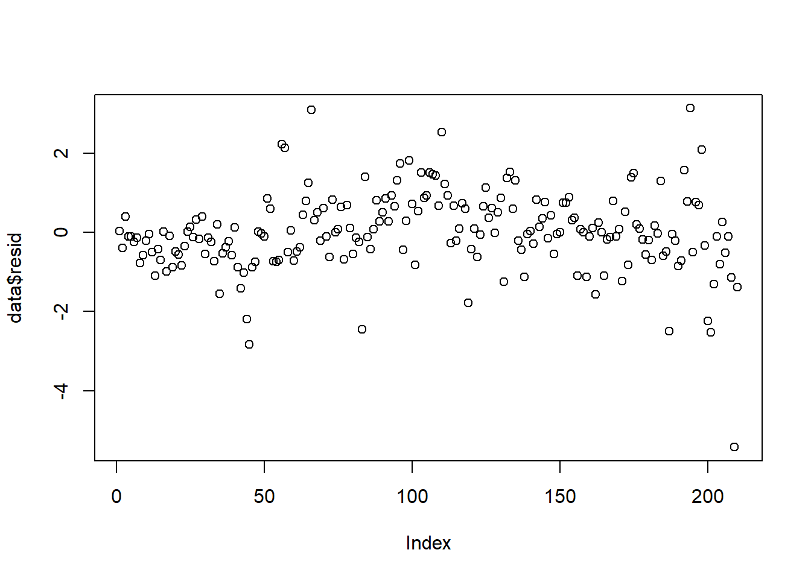
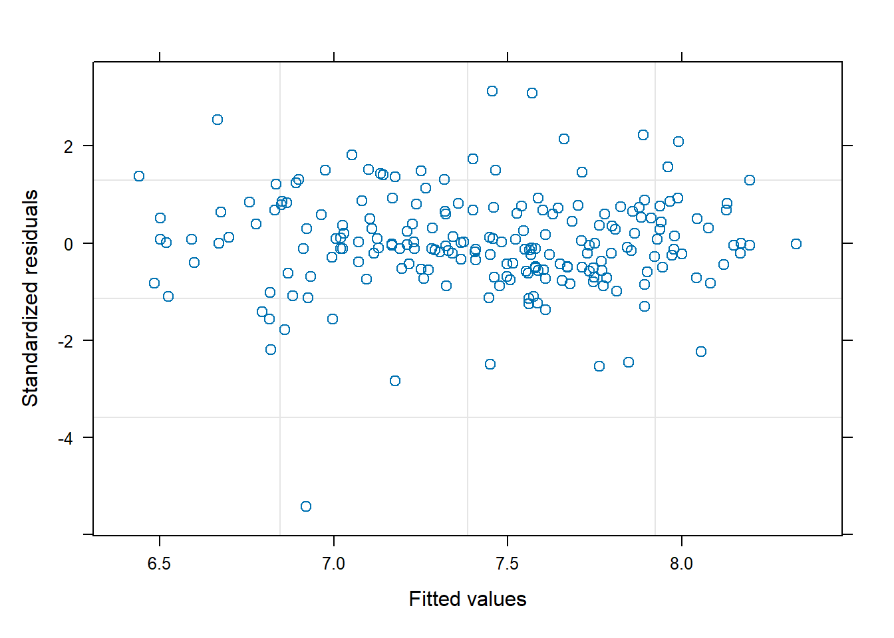
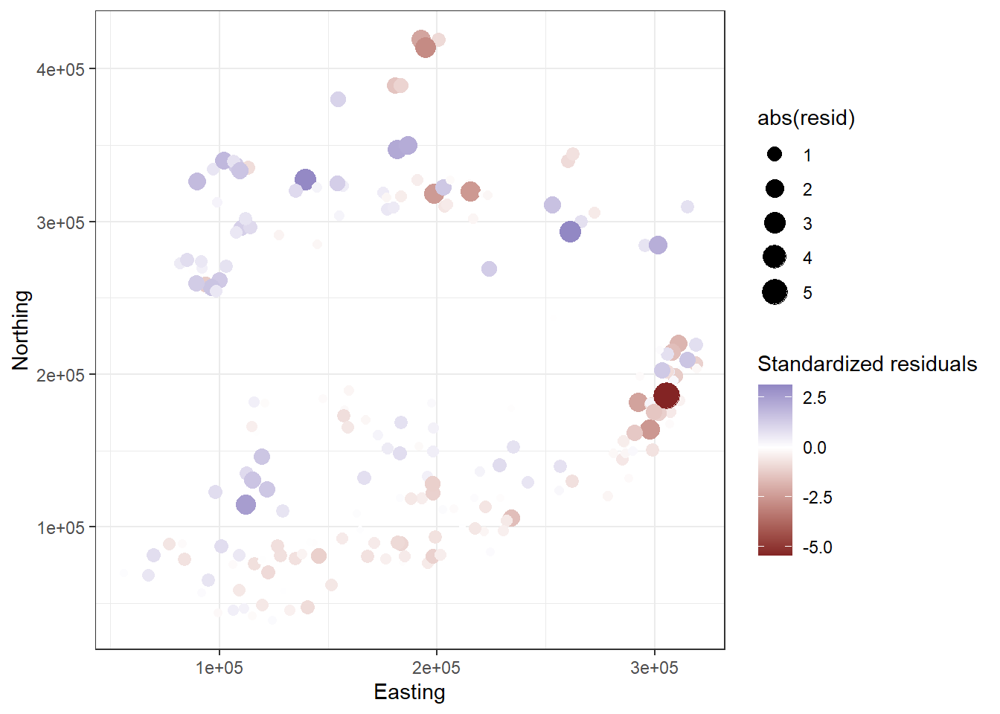
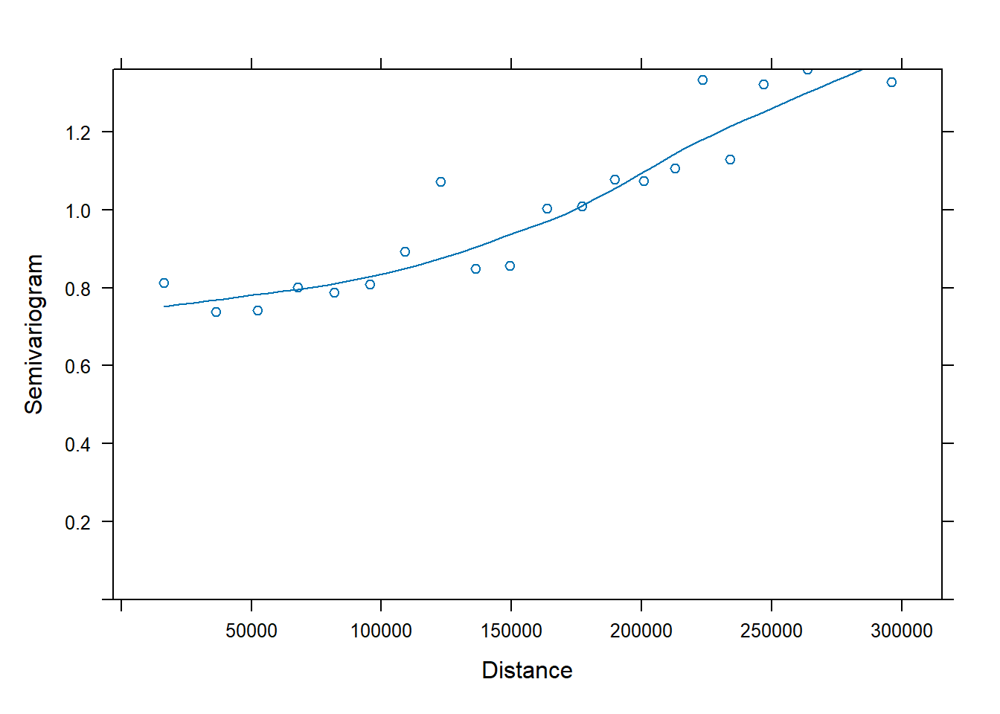
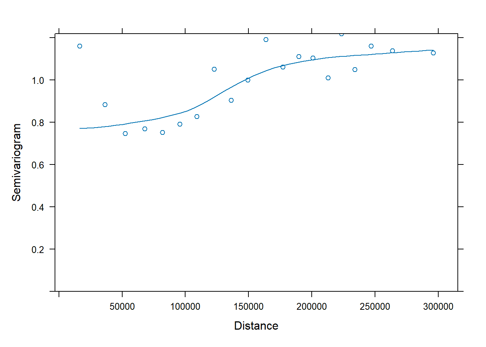

The data used are a subset of the data analysed in Cruikshanks et al. (2006), a technical report by the Environmental Protection Agency, Wexford, Ireland. We only use the 2003 data, and several recordings were dropped. The original research sampled 257 rivers in Ireland during 2002 and 2003. One aim was to find a different tool for identifying acid-sensitive waters, which currently uses measures of pH. The Sodium Dominance Index (SDI) was proposed as an alternative. The motivation for this research is the increase in plantation forestry cover in Irish landscapes and its potential impacts on aquatic resources.
Load the packages
library(tidyverse)
Warning: package 'tidyverse' was built under R version 4.4.2
── Attaching core tidyverse packages ──────────────────────── tidyverse 2.0.0 ──
✔ dplyr 1.1.4 ✔ readr 2.1.5
✔ forcats 1.0.0 ✔ stringr 1.5.1
✔ ggplot2 4.0.0 ✔ tibble 3.2.1
✔ lubridate 1.9.3 ✔ tidyr 1.3.1
✔ purrr 1.0.2
── Conflicts ────────────────────────────────────────── tidyverse_conflicts() ──
✖ dplyr::filter() masks stats::filter()
✖ dplyr::lag() masks stats::lag()
ℹ Use the conflicted package (<http://conflicted.r-lib.org/>) to force all conflicts to become errors
library(nlme)
Attaching package: 'nlme'
The following object is masked from 'package:dplyr':
collapse
library(lme4)
Warning: package 'lme4' was built under R version 4.4.2
Loading required package: Matrix
Attaching package: 'Matrix'
The following objects are masked from 'package:tidyr':
expand, pack, unpack
Attaching package: 'lme4'
The following object is masked from 'package:nlme':
lmList
library(sjPlot)
Warning: package 'sjPlot' was built under R version 4.4.3
Attaching package: 'sjPlot'
The following object is masked from 'package:ggplot2':
set_theme
library(ggeffects)
Warning: package 'ggeffects' was built under R version 4.4.3
Read the data from Irishforest.csv and inspect the first few lines to ensure it was read correctly.
Pay careful attention to the following variables (pH is the response variable):
the residuals are centered along zero which might suggest the residuals are randomly distributed.
data$resid <-residuals(ph_gls, type ="normalized")plot(data$resid)

plot(ph_gls)

Extract and plot the residuals spatially (colored by residual value). Are the residuals spatially correlated?
there is a clear pattern in the figure which shows some sort of spatial correlation
ggplot(data, aes(x = Easting, y = Northing, color = resid, size =abs(resid))) +geom_point() +scale_color_gradient2() +theme_bw()

Plot a variogram to assess spatial correlation.
the variogram also suggests some sort of spatial correlation.
#The nlme package includes a built-in Variogram() function to plot these.vario_bor <-Variogram(ph_gls, form =~ Easting + Northing, resType ="normalized")plot(vario_bor)

Add at least two different spatial correlation structures to the model.
Plot a variogram of the best model. Is the spatial correlation accounted for?
the the spatial correlation is not fully accounted for.
vario_best <-Variogram(ph_ratio, form =~ Easting+ Northing, resType ="normalized")plot(vario_best)

If not, describe your next steps.
since the spatial correlation isn’t fully accounted for, I would explore other options like adding some sort of variance to the model and exploring other form of correlation not accounted for by the spatial correlation.
Exercise #2: Plankton / Cod dataset
Data from: Freitas, C., E. M. Olsen, H. Knutsen, J. Albretsen, and E. Moland. 2016. Temperature-associated habitat selection in a cold-water marine fish. Journal of Animal Ecology 85:628–637.
The authors examined the effect of ocean temperature on dive depth of individually tagged Atlantic cod along the Norwegian coast.
Read the data from Cod_Daily_Depth.csv and inspect the first few lines to ensure it was read correctly.